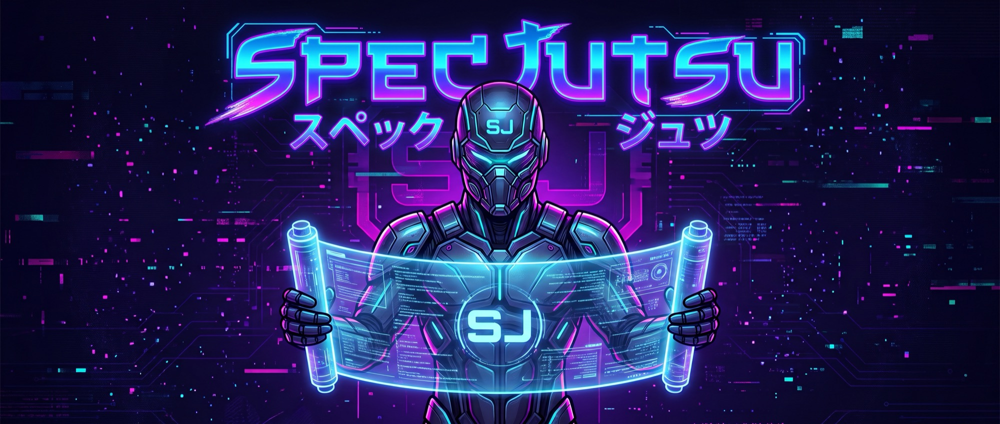
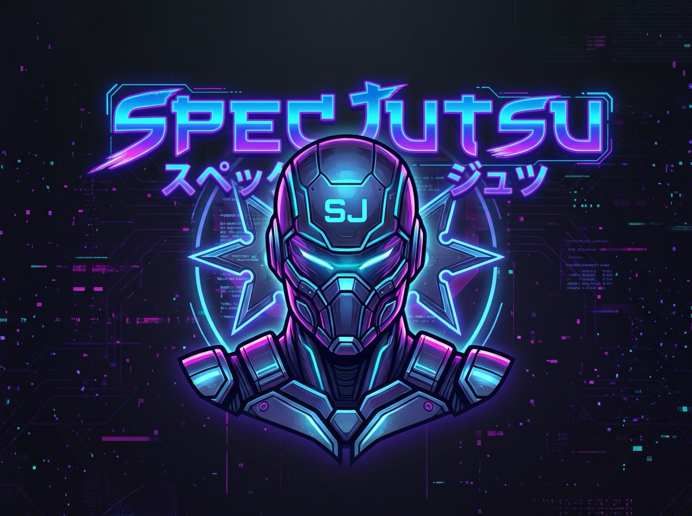

AI coding agents that prove their work. Every spec scenario gets a test, every test fails first, and CI refuses anything unproven.
$ cargo install --git https://github.com/nabour-labs/specjutsu --tag v0.2.0 specjutsu
Keep your spec tool. specjutsu proves the code matches it.
The gap
Today's spec-driven tools split the job in two. Neither checks that the code actually satisfies the spec. The link between a scenario and the test that proves it lives only in a prompt.
Spec Kit and OpenSpec turn intent into durable Markdown. Great specs, but nothing checks the code against them.
Superpowers nudges the agent toward TDD by prompt. Helpful, but a prompt is a request, not a guarantee.
Combine them and you get two competing workflows, more ceremony and more tokens, and still no proof.
Three promises, enforced by a binary
specjutsu does deterministically, in the binary and in CI, what other tools hand to the model.
Every spec scenario is traced to a test. A scenario with no test, or a test pointing at a scenario that no longer exists, blocks the merge.
CI runs your new tests against the old code. If they already pass there, they didn't drive the change, and the gate says so.
If a program can decide it, the binary does it and hands your agent a few lines, not whole folders and raw test logs.
How it works
Plain OpenSpec Markdown plus one convention: a stable ID at the start of each scenario. Any OpenSpec repo that follows it is already a specjutsu repo.
Give every scenario a stable ID like AUTH-003.
#### Scenario: AUTH-003 Reject expired token - **WHEN** the client calls GET /me with a token issued 25 hours ago - **THEN** the response is 401 with code TOKEN_EXPIRED
By test name or by a comment above it. No library needed.
#[test] fn auth_003_rejects_expired_token() { … } // spec: AUTH-003 #[test] fn rejects_expired() { … }
See every gap locally, then let CI refuse anything unproven.
$ sj trace trace: 3 mapped, 1 gaps, 1 orphans, 0 without ID gap AUTH-004 Refresh a revoked token (openspec/specs/auth/spec.md:31) orphan AUTH-009 ← tests/auth.rs
The moat · red-on-base
That's the check no other spec-driven tool makes. sj gate proves your tests were red before they were green, in CI, every pull request.
$ sj gate --base origin/main ✓ AUTH-003 red on base, green on head ✗ AUTH-007 passes on base: test didn't drive change gate failed (exit 1)
Exit codes: 0 pass · 1 fail · 2 error. Drop it into any CI.
Comparison
We respect these projects; specjutsu reads their specs. Here's where each one stops.
| GitHub Spec Kit | OpenSpec + TDD | Superpowers | Superpowers + OpenSpec + TDD | specjutsu | |
|---|---|---|---|---|---|
| Durable spec | Strong | Strongest (delta specs) | None | Strong | Strong: OpenSpec-compatible deltasLIVE |
| Scenario → test trace checked | No | No | No | No | Yes, sj traceLIVE |
| Proof the test failed first | No | No | No | No | Yes, red-on-base in sj gateLIVE |
| TDD enforced | No | No (DIY) | Yes, by prompt | Yes, loosely tied to spec | Yes, by CI gateLIVE + agent hooksv0.3 |
| Runtime needed | Python + uv | Node 20.19+ | None | Node | None: single binaryLIVE |
| Reads other tools' specs | No | No | n/a | n/a | OpenSpec nativelyLIVE · Spec Kit importv0.5 |
| Existing projects | Via extension | Best | Weak | Good | sj adopt, incrementalv0.5 |
| Monorepo-aware | Limited | Limited | No | Limited | Per-package specs and runnersv0.5 |
| Token cost | High ceremony | Low | Medium | High (two workflows) | Designed for lowest; public benchmarkv0.5 |

Built for agents
specjutsu never calls an LLM. It's the deterministic referee your agent reports to, and CI calls the same binary, so local and CI results always agree.
--json.Claude Code adapter lands in v0.3; the other four follow in v0.5.
Quickstart
Prebuilt binaries for macOS, Linux and Windows are on the releases page, or build from source.
One binary, no runtime. Pick your platform from the release, or build it.
# prebuilt binary (macOS arm64 shown) gh release download v0.2.0 \ -R nabour-labs/specjutsu \ -p 'sj-aarch64-apple-darwin.tar.gz' tar -xzf sj-aarch64-apple-darwin.tar.gz install sj-aarch64-apple-darwin/sj ~/.local/bin/ # or from source (needs Rust) cargo install --tag v0.2.0 \ --git https://github.com/nabour-labs/specjutsu \ specjutsu # check it sj --version
See which scenarios have tests and which don't.
sj trace # list gaps and orphans sj trace --json # for tools and agents
Blocks merges that can't prove red-on-base, then green.
# .github/workflows/ci.yml - uses: actions/checkout@v4 with: { fetch-depth: 0 } - run: sj gate --base origin/${{ github.base_ref }}
Roadmap
specjutsu gates its own repo with its last released binary, so a pull request can never approve itself.
sj trace on OpenSpec + cargo test; CI report.
sj gate with red-on-base. Blocking on this repo.
status, next, test, evidence ledger; Claude Code adapter.
All runners and agents, importers, token benchmark, public launch.
Star the repo to follow the road to v0.5, or send your first PR: adding a test runner or an agent adapter is the intended way in.